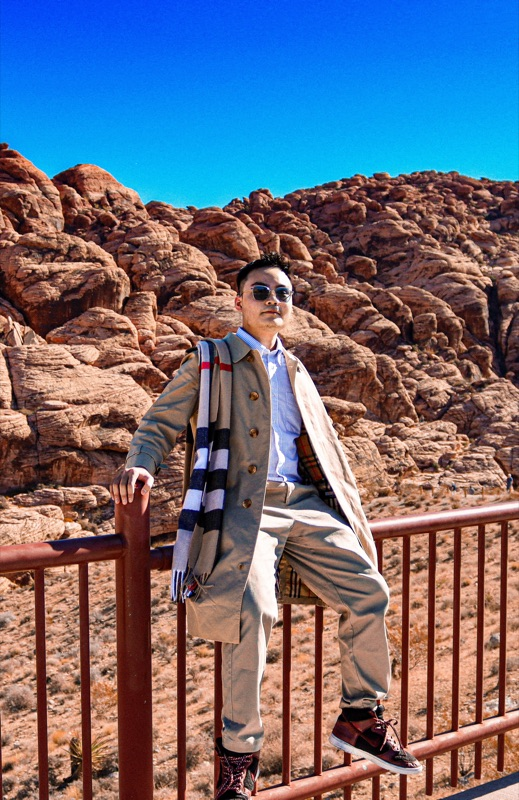

Hi everyone,
I am currently a Security Team Member at NAB Vietnam, specializing in cybersecurity risk assessments, governance, and compliance frameworks. I hold multiple industry-recognized security certifications and earned a degree in Artificial Intelligence from RMIT Vietnam.
Beyond cybersecurity, I am passionate about leadership development, mentoring, and knowledge sharing, supported by hands-on experience and professional certifications.
I enjoy using my expertise, curiosity, and enthusiasm to help others solve challenges, grow professionally, and achieve their goals.

Years of Experience
Leadership Activities
Professional Security Certificates
garoldnguyen@gmail.com
+84 905 47 2003
Ho Chi Minh City, Vietnam